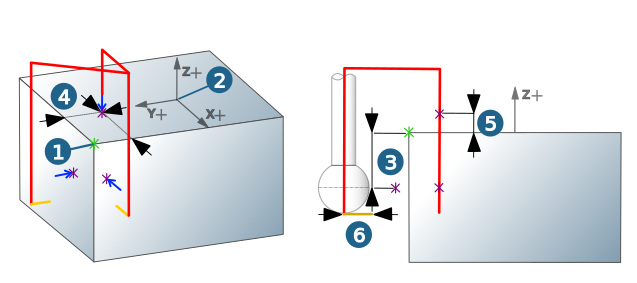

Contours and parameters
Contour selection
|
The following elements can be selected as Point: point, arc center and snap point. |

Contour attributes
The point position of the selected entity (1) is displayed relative to the machining frame (2).
Use Measuring axis to specify the direction for measuring (none, + or -) for the X, Y and Z axis of the machining frame (2).
|
Measuring depth (XY): (3) The measuring depth is measured in the center of the ball of the probing tool. It is either defined as the top or bottom of the selected edge (option: Top of edge / Bottom of edge) or as an absolute value relative to the job frame (option: Absolute (jobframe). |
Use Position shift (4) to specify a value for moving the point to be measured on the X and/or Y axis in a positive or negative direction (positive/negative value).
In addition, it is possible to define an allowance (5) for the point to be measured in the X, Y and Z direction.
You can define the allowance using the formula elements Reference job Allowance (RJ:ALL), Reference job Allowance XY (RJ:ALLXY) or Reference job Allowance Z (RJ:ALLZ).
Infeed
Infeed length (6): Toolpath (at the feedrate) up to the contact of the probing tool with the contour (+ allowance).
|  |
Tolerances
Symmetric (upper and lower allowance are the same)
Define tolerance for the minimum and maximum deviation of the actual dimension to the target dimension.
Two sides (upper and lower allowance are different) Define tolerance values for upper allowance/lower allowance.
NC
Create log file: Creates a measuring log.
Select Default if the machine is to create a measuring log with the structure specified by OPEN MIND. Use the Extra function to generate a measuring log that can be customized. The Best Fit function (only 3D Point Probing) generates a measuring log that can be read in with the VIRTUAL Machining Center in order to determine the real part position with the help of the Best Fit function. For further information on the Best Fit function, see the VIRTUAL Machining Center product documentation.
Stop program if out of tolerance: Stop measuring if a measured value is outside of the specified tolerance range.
Note
Some controllers do not support automatic log generation/Message mode. Please contact your OPEN MIND partner if you have any questions.
Retract mode/clearance
|
Specify the level of the clearance plane. The collision check is carried out with a circular surface of the size of the circular element to be measured + 2*tool diameter + 2* infeed length. |